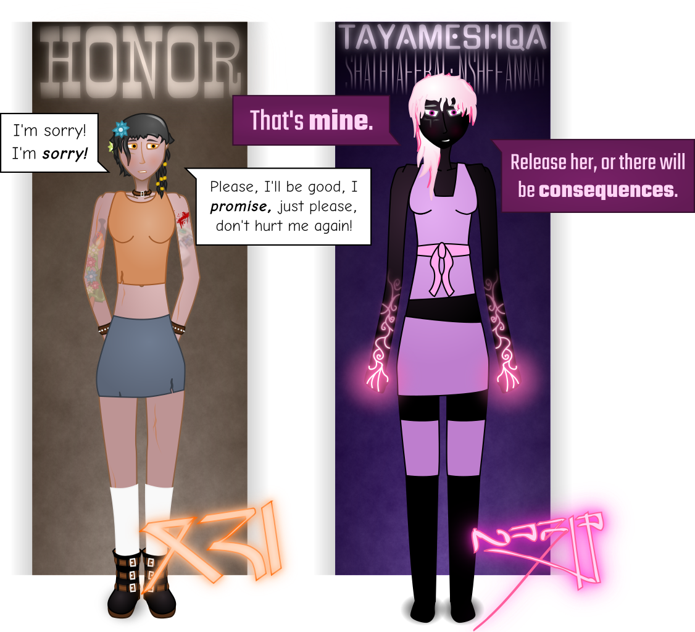

“Come on, Rose!”
The sound of fiddle music and background chatter fills the air as the woman in red leather lazily sips her drink. “I said ‘piss off,’ Honor,” she returns coolly, her eyes remaining fixed on a scantily-clad serving wench.
I fold my arms. “God, Rose, it’s not like I’m asking for a ship and a crew, just a job—”
Rose sets down her glass with a sharp clink, turning slowly on her stool. Theatrically, she claps a hand to my shoulder. “Really, sweetheart,” she says, her voice rising slightly, tone coldly mocking. “You’re just asking for a job, now?”
Even in the low, intimate evening lights of the tavern, there’s no mistaking her expression. I fight to steel my resolve, keep from shrinking back at the look on her face.
“That’s all!” I raise my hands defensively. “Look, it’s like I said, really — I’m just trying to make ends meet here— ow!”
Rose’s grip is getting tighter and tighter. My cheeks twitch as her nails bite into my skin. I can’t look away, reduced to a pien şai stunned by the forelights of an oncoming locomotive. Her bright silver eyes bore into mine. “Do you remember what happened, Honor dear? The last time I gave you a job?”
“Y-you’re hurting me!”
“Dove, do you remember?” Rose calls out, eyes still fixed on mine. There’s a guffaw from behind her.
“You don’t mean that business on Emerald, do you?”
“I do, in fact.”
“Not that job with the Countess’ daughter?”
“The very one.”
“And all those crates of counterfeit şen?” Dove leers down at me, lounging on the side of the bar, her long ruddy hair seeming to glow in the low light. She towers over the both of us with the tall, slender frame of a Zyahua pureblood.
“That’s it exactly, Dove!” Rose replies, a cruel smirk plastered across her lips.
“You know, I think I might just remember that,” Dove exclaims, tapping the side of her head. “What with all the explosions and that little cattle stampede. I might just.”
“How was I supposed to know the smokes were counterfeit?” I blurt out. “And it’s not like I was the one who left a box of grenades at a fucking whorehouse— aaah!!”
Rose twists her hand sharply. Crying out, I stumble at the burst of pain and she shoves me downwards, knocking me to my knees. She leans forward, holding me firmly in place, squeezing my shoulder in just the right place to set my nerves on fire.
“I’m not interested in your excuses, girl,” she growls, grabbing me by the hair with her other hand and yanking my head back, forcing me to look her in the eye. “I’m interested in money. And you lost me a lot of money, Honor dear. So no. I will not be giving you another chance to damage my business. Not by a single goddamn sovereign.”
“P-please…” I grit my teeth through the pain, my eyes watering. “Just… just one more chance… help you make the money back… god, I’ll work f-for bed and board until I’ve p-paid you back—”
Rose lets out a slightly manic laugh. “Pay me back? Work without pay? I don’t think I’ve ever seen a grown woman this desperate!”
“Sight for sore eyes, isn’t it, boss?” Dove takes a dainty sip from her wine glass, smirking down at me as tears soak my cheeks.
“Oh, it really is. It really is.” A cruel grin spreads across Rose’s face. “You poor, pathetic thing, Honor. You must really be in a bind to come crawling back to me.” She hops to her feet, shoving me against the bar. Gripping my neck, she forces my chest down flat across the glass, sending empty bottles and mugs clattering away onto the floor. I try to wrest myself free but she digs her sharpened nails in deep and rams her free hand up into the small of my back, pinning me and making me cry out in pain.
“I would have thought your twenty strokes would get the point across,” she continues, rolling up her sleeves and pulling down my tight skirt. “Since Dove lacked the foresight to bring that lovely nerve-lash of hers along, I guess I’m just going to have to make do.”
“Please! Please, no, don’t, I’m sorry, I—”
I scream as her nails rip into my unprotected inner thigh. I try to force my legs together but she’s holding them apart with her knees. “The more you struggle, the worse it’s going to be for you,” Rose whispers in my ears, squeezing my throat until I’m struggling to breathe. I hear a knife snap open. Then—
I spasm uncontrollably, letting out a strangled cry of agony as a serrated blade rips into my arm. “How many minutes has she been harassing us for, Dove?” I hear Rose ask. My vision is starting to swim, my ears starting to fill with static.
“At least seven, boss.”
“Seven stripes it is then—”
“Put the girl down, child.”
A new voice. The accent is strange, unfamiliar; her words faintly antiquated. I feel Rose’s grip loosen as her attention shifts to the interloper and suck in a fresh gasp of air.
“Run along, wench,” the mercenary commander barks. “This ain’t none of your concern.”
“That’s my decision, dearest, not yours.”
“If you’re in the mood to get cut on, I’d be happy to accomodate you too.” Rose’s voice is full of contempt. “I’m going to be generous and give you one chance to walk away, pretty girl.”
“You were instructed to release her.” The stranger’s voice is oddly calm, confident. Almost amused. “I gave you a chance to obey willingly.”
Delirious from pain, I stumble as Rose’s grip slackens and drops away. A soft hand catches me under the shoulder, hauling me effortlessly to my feet. Disoriented, I turn my gaze towards my rescuer, blinking to try and clear away the tears.
She’s unlike anything I’ve ever seen. She’s nearly as tall as Dove, and her body is inhumanly beautiful. Her skin is black as night, her hair white as snow, accented here and there by thin strands of pink. Her softly slanted eyes, set into a youthful face, are a deep purple; it’s almost like staring into a polished amethyst. They’re ornamented above and below with subtle, blocky, asymmetrical tattoos. Her body is slight, clad in tight-fitting alien fabrics that seem to shimmer with their own inner light and perfectly flatter the elegant curves of her delicate frame. Her eyes are fixed on the mercenary captain, but she spares me a quick, reassuring glance.
Rose is staring at her hands. “What the ṕing sha dua did you just do to me, witch?”
My rescuer smiles thinly. “Tell me something, little girl. Do you make a habit of torturing innocent people?”
“Innocent?” Rose spits. “That bitch was getting off easy! Much easier than you’re going to. You’ve made a very, very seriously mistake, screwing with the Dawn Daughters.” She snaps her fingers and Dove and Faith advance on us, Dove’s heatknife crackling to life and little Faith aiming her revolver.
“Civilized businesswoman that I am, I’m going to make you a deal,” Rose continues. The whole tavern’s eyes are on us now, and she’s loving every second of it, drinking up the attention like a fine wine. “Hand over the girl without any fuss and once I’m through with you, I won’t sell you both at the slave markets.”
The woman raises her free hand, purple luxtoos glittering to life, glowing lines snaking in thin, elegant curves around her palm and down from her wrist, towards her elbow. “You gravely misunderstand your position here, mercenary,” she responds levelly. “I’m not going to warn you again.”
“Ooh, a fancy light show!” Rose clasps her hands to her chest in mock horror. “Darling, that might impress the provincials in these parts, but—”
Her words trail off and her eyes widen. She blanches as her mouth opens slowly, a faint, strangled cry coming out as her limbs begin to quiver. Her enforcers’ weapons slip from their hands; Faith falls to her knees, clutching her chest, gasping and moaning in pain. “God, please, make it stop, make it stop!”
Rose stumbles backwards, clutching at a barstool for support and doubling up, letting out short, quiet yelps of agony. Dove clutches the wall; her neck spasms, and then she clutches at her throat as she vomits violently.
“Slavery. Charming.” The white-haired woman lowers her hand, the luxtoos fading slowly. She glances at me. “What was her name, love?”
“Um. Rose?” I whisper, staring up at her through the haze of pain.
“Rose, my dear. I want you to think very carefully about your decisions.” The woman approaches her. Rose is curled up into a ball, rocking back and forth, her eyes squeezed shut and her teeth gritted tightly. My savior kneels gracefully, looming over the helpless mercenary… and ruffles her hair. “For the next, oh, half hour or so.” She smirks. “If you can think through all this pain, that is.”
She grips Rose by the hair, yanks her head back violently, looking her forcefully in the eye. “I want you to think,” she continues, her voice suddenly commanding and resolute, “about every poor choice that led you to where you are right now, curled up and squealing on a tavern floor like a stuck pien şai. Sadists like you are obviously incapable of remorse but I hope the next time you think to torture someone helpless, you’ll remember this moment. Remember that you never know when someone might decide to come for you. When you might wind up on the other end of the knife. All right?” She smiles cheerily, pats Rose on the cheek. Rose convulses violently and lets out a choked scream, tears streaming down her cheeks.
“Don’t worry,” the woman says reassuringly as she gets to her feet. “It won’t last too terribly long. Just long enough to cut a nice, deep scar in your memories… and wake you up in a cold sweat in the middle of the night for years and years to come.”
She turns back to me, a gentle smile on her face. The world feels unreal, dreamlike. I can’t tear my eyes away from the sobbing mercenaries. Can’t make any sense of what’s happening. Who the fuck is this woman?
And, more to the point… what is she?
“Are you wounded, love?” she asks, reaching out and touching me gently on the cheek.
“Uh. I—” I stammer, flushing at the unexpected touch. She’s so beautiful. “I’m… I’m fine,” I lie, gritting my teeth against the screaming nerves in my arn. “I— I should go, I—”
I turn and break into a run. Or… I try to. But it doesn’t happen. My legs won’t obey me. My eyes open wide, terror sparking through me. What is this? What’s going on? What’s happening to me?
I need to get away. God, please, I need to get away. This is a nightmare. I need to wake up.
“Hey. Honey.” The woman ruffles my hair. “It’s okay. I’m not going to hurt you, alright? I just can’t let you run off all wounded, not after I’ve gone to all the trouble of rescuing you.” She takes me by the hand, squeezes gently, her skin warm and soft. “Let me get you out of here, alright? Let’s calm you down a little. You must be scared out of your wits right now, you poor thing.”
I nod shakily. She puts an arm around my shoulder, leads me towards the exit. The spectators are hooting and cheering drunkenly; blearily, I catch sight of money changing hands all around the room. “Attagirl!” cries a muscular, scarred man clutching a huge mug of ale as he passes us, slapping the woman on the back and giving me a thumbs-up before disappearing back into the crowd.
I suck in deep breaths of fresh tropical air as we emerge from the tavern, the warmth of the setting suns, distant pinpricks on the horizon, anchoring me and bringing me back to reality. I look up at my rescuer, wondering if anything I remember actually happened—
—the pain cuts in to remind me. I touch my sleeve. It’s torn open. I flinch and pull my hand away. Blood glistens on my fingers.
“Oh, she really hurt you, didn’t she?” The woman looks down at me, her face full of concern. “How are you holding up, love?”
“I…” I shake my head. “S-sorry… I… wh-who are you? Why did you h-help me?”
“Oh! Where are my manners?” The woman smiles apologetically. “My name is Tayameshqa.” The name has a sound in it I’ve never heard before, a sound like a pickaxe striking rock. I don’t even know how to begin to try and pronounce it, but as if reading my mind, she quickly adds, “But you may call me Taya.”
“Taya. Okay. Thank you. Um. I’m… I’m Honor.”
She bows slightly, taking my hand and kissing my palm gently. “I am most pleased to make your acquaintance, sweet Honor.”
I blush hotly, looking off to the side, unable to meet her gaze. “It’s… good to meet you too,” I murmur, curtseying quickly. “Thank you for… for protecting me from those mercenaries.”
“It appears I did not intervene soon enough,” Taya responds worriedly, examining the rent in my coat. “Is there somewhere… I can take you? Friends, family, a company, a ship? I do not wish to leave you alone and unguarded in such a vulnerable state, and your wounds need tending.”
I look down, feeling slightly sick. “N-no. I… I have no one.”
“You have no one?” Taya frowns. “Do you mean to tell me you are alone on Saravan?”
I nod. “Y-yeah. Um. I just… maybe you could take me back to my tavern room?”
“Honor, darling.” Taya puts a hand on my shoulder. “I am not going to leave you on your own. Is there… a patron who would arrange protection for you, send a ship to pick you up? Or… family you could be returned to?”
I shake my head silently.
“…how in Haven did you come to be here?” Taya exclaims in alarm. “You clearly can’t fend for yourself well enough to be a lone trader or a bounty hunter or anything, so you can’t be here on your own terms. Were you… marooned?”
“Not… exactly. It’s… kind of a long story?”
She takes my hand again, squeezes it gently. “How about this. I have an apartment not far from here. It’s warm and comfortable and you’ll be safe there. I’ll tend to your wounds and you can tell me all about it, alright?”
“I—I—” I stare at her, eyes wide. “I don’t— um— I don’t want to be a bother— I’m sure you have… important things to do and—”
“Keeping an innocent girl from being tortured or… killed…” she flinches a little as she says the word, “…by pirates and slavers is a very important sort of thing, wouldn’t you agree, love?”
“Um. I… I suppose.” I look up at her timidly. “Um. Why are you being so kind to me? Why did you risk your life just to help someone you didn’t even know?”
“Risk my life?” Taya gives me an amused smile. “You greatly overestimate the threat those mercenaries posed to me. I was in no danger. It cost me nothing, and it spared a beautiful girl from a lot of suffering. That’s what I’d call a win-win, wouldn’t you?”
“…y-you think I’m beautiful?” I stammer, blushing, taken completely off guard.
Taya squeezes my shoulder, her hips swaying as she moves slowly closer, placing a hand tenderly on my waist. “My people are artisans and connoisseurs of beauty in every form, Honor,” she responds softly. “So believe me when I say you are an exquisite young woman, one whose company I am privileged to share.”
“O-oh!” I stare at the ground, cheeks burning, too embarassed to look at her. “I— um— thank you? I… I think you’re really beautiful too…” I trail off, too humiliated for words. As I breathe in, I catch her scent — a rich, complex aroma that smells like the finest incense. Hints of flowers and fruit and nectar mixed with the warmth of a roaring fire. I can’t help but inhale deeply, savoring the smell for a moment.
I feel her soft hand on my chin, and she presses upward, lifting my head so she can look me in the eye. “You are very kind,” she says softly, stroking my side. “Allow me to return the favor by taking care of you tonight?”
I hesitate. I don’t know her. I’m alone on a strange planet full of slavetakers and smugglers and liars and pirates and thieves and sadists and murderers, surrounded by lawless taverns and opium dens and slave markets and gunsmiths selling weapons you’d be shot on sight just for carrying in the Empire. Absolutely nobody here can be trusted and I don’t even know what Taya is, let alone who, and letting her take me away to be alone with her God knows where would be transparently the dumbest decision of a lifetime full of terrible choices…
…but.
I have no friends, no allies.
I’m almost out of money.
I’m starving.
I’m tired.
I have nowhere else to turn.
She’s been kind to me.
She saved me from being tortured and maybe worse.
And, God. I don’t want to be alone anymore.
There’s a lot I’d let her do to me right now, just as long as she fed me me and kept me company.
“…okay,” I murmur, looking down and squeezing my wrist. “I’ll come with you, Taya.”
Taya tousles my hair. “Good girl,” she says, beaming at me and taking my hand. “My place is right this way.”
She leads me down a tangle of avenues and alleyways, past shouting vendors, beggars, and whorehouses. A dilapidated streetcar, pulled by a team of tame barikhar, trundles past as we turn a corner. Broad rays of light in every color shine down from the storefronts’ blazing neon signs, glowing in the deepening mist rising off the sea. Nobody accosts us, but Taya seems to navigate without regard for her own safety. Though after what she did in the tavern… maybe she has good reason.
We come out near the waterfront, along a row of tall wood-and-stone buildings, walls covered with complex engravings and reliefs. Landscapes, people, text in a script I can’t read. They look older than most of the other buildings in the little vareçta, but in a dignified way, not a rundown one. The moss and lichen looks almost like topiary, as if it’s been trimmed into pleasing patterns.
I can feel ocean spray and warm wind against my cheek as we walk along the avenue. There’s fewer people out here, less bustle and noise. In the chaos of the archipelago it’s an oasis of calm.
In the distance, an orbital shuttle touches down for a water landing, sending up a huge splash of water before turning towards the port. I flinch at the sight of the shuttle’s markings. The Moonblossom Group.
Slave traders.
“Here we are.” Taya leads me towards one of the old stone buildings. She slides the door back, holding it for me as I follow her in. Inside is a warm little lobby, full of potted plants, flickering candles, walls painted in vibrant pastel landscapes, a huge bay window looking out over the ocean. The scent of the smoky air is a rich, intoxicating medley of incense and burnt şen.
A native Sara clerk is reclining in his seat, feet propped up next to an overflowing ashtray on his desk with a smoldering cigarette in his mouth. He nods amiably at us over the newssheet in his hands as we pass through. I smile at the sound of my native tongue on the radio. It’s a sappy love song, but honestly, most of our music is. Traditional instruments and rhythms mix enticingly with the deep, thrumming chords of an electric pai ĉiņ and what sounds like the meter of Khmai wintersong.
For all its sins, Saravan’s at least got good music.
I follow Taya up a few flights of stairs. It’s a struggle to keep up with her. I’m winded by the time she pushes open the door to the deck but she hasn’t even slowed down.
I pause to gaze out over the railing and take a deep breath of the ocean air. We’re high enough up to see the lights of the other islands stretching away into the fog, until they’re nothing but a warm glow in the evening sky. From up here, you could almost think this place was beautiful.
Taya brushes a hand against a door and the electronic lock chirps obediently. She pushes it aside and ushers me into a cozy little candlelit room. There’s a kitchenette near the entrance, an icebox, a range, a teakettle. As Taya closes the door, I bend down to unbuckle my shoes, and dig my toes into the soft carpet.
“It’s so warm,” I murmur, looking at her gratefully. Nothing like my dank, dark little cabin atop a tavern full of screaming drunks.
“This hotel was one of the first places they built when the vareçta was founded,” Taya remarks, stepping out of her sandals and sliding them against the door. “It’s not just some ancient hull the Zyahua dragged down from orbit and hollowed out to piss in. The Sara built it themselves, with all the love and care they put into their caravan-wagons and sea-ships.” She smiles. “They meant it to be a place for weary travellers to rest. Would you like food? Tea?”
“Yes, please.” I smile at her gratefully. “Thank you so much.”
“My pleasure, love.” She gestures at a big, fluffy sofa in front of a wood-and-paper divider. “Go sit down and get comfortable while I get dinner going.”
I sink into the couch, resting my aching neck against the welcoming fabric. I close my eyes, listening to the gas hiss and water boil, closing my hand tightly around the agonizing gash in my arm. It’s so nice to just… rest, finally. To feel calm and safe, even if I’m probably not. Whatever Taya is planning on doing to me… this moment is worth it.
There’s a splash from the kitchen. “It’s a fascinating way to cook,” Taya comments over the sound of a kettle whistling. “So primitive, but there’s something oddly charming about it. There we go.”
I open my eyes and raise my head to see her bending down to set a steaming mug of tea down in front of me. “It’s a local blend,” she says, “but I’ve grown fond of it. I do hope you’ll like it?”
I pick up the mug, hold it up to my lips, drink in the scent and warmth, wondering idly if it’s drugged or poisoned. “Th-thank you so much,” I murmur anyway.
Taya pats me on the shoulder and sits down next to me. “I put some shèu tiang on the stove. It’ll be ready before too long. In the mean time, let me have a look at you.”
“What do you mean?”
“Your wounds. You were bleeding earlier, love.” Taya lifts the mug out of my hands and sets it back on the table, placing my hands in my lap. “Turn towards me?”
I turn to face her, fidgeting anxiously, my legs pressed tightly together. Taya reaches out, unzips my jacket, gently slips it off me. I let out a little whimper as the fabric brushes against my arm and Taya looks up in alarm.
“Where are you hurting, Honor?”
“M-my arm—”
Taya takes my arm in her hands, and her eyes widen. “Oh, sweetheart. Doesn’t this hurt?”
I nod. “A lot.”
“You should have said something!” She cups my chin in her hand, brushing a hand through my hair. “Let me take away the pain, love.”
“Take awa—?” I begin, and cut off sharply as a sense of warmth and relief rushes through my body, momentarily blanking my mind. I shiver and gasp at the rush. It feels like a shot of opium. The pain in my arm lessens and then disappears altogether.
“H-how are you doing this…” I breathe, swaying side to side. “D…did… you put opium in the tea…?”
“No, darling.” Taya rubs my scalp gently, tousling my hair this way and that. “Do you know what I am, Honor?”
I shake my head woozily.
She smiles. “You’re from the Empire, aren’t you?”
“Yeah.”
“Does the name ‘Shadow’ mean anything to you?”
I nod. “Oh. Y-yeah. They’re… the Empress fought a war with them, didn’t she? A long, long time ago.” I shiver. “And they killed her. They wiped out Carnelian. The whole planet burned. They say it was the first war the Empire ever lost.”
She nods, her face falling. She clasps her hands in her lap. “It a cruel thing to be remembered for. All our glories and power and arts and the moment that all the galaxy thinks of when they think of my people is a genocide that drowned a world in blood.” She sighs. “I suppose we deserve as much.”
I stare at her in terror and wonder, my heart beginning to race. “You’re… a Thalisan?”
“I am.” She looks at me tenderly. “Does that frighten you?”
“I…” I nod. “A l-l-little bit, yeah? I m-mean, I’ve… never m-met one of your kind before — I almost th-thought… y’know, almost thought you were a myth.” I laugh nervously. “All I even know about you is, um. Old traders’ tales. Crazy things, impossible things.”
She strokes my thigh gently, and even though my fear I can feel myself blushing. “Do you think I’m going to hurt you?” she asks quietly.
“I… I mean, this is a planet full of monsters,” I murmur, looking away. “And you’re… God, I’ve heard so many scary stories.”
She squeezes my thigh. “I give you my solemn word, little Honor. I do not ever want to hurt you.”
“Wh-what do you want, then?” I look up at her timidly. “Everyone here wants something. Power, fame, slaves, riches, ships, opium. You must want something from me to be this kind to me. A-and,” I add quickly, squeezing my hands together, “I’d be happy to give it to you, whatever it is, you’ve been so kind to me, really, I would, I just— I just don’t really have anything left to give, is all…”
“Oh, but you do.” Taya pats my shoulder. “You have so much to give, Honor. What I want from you is your company. Your voice, your thoughts, your stories. I want to get to know the broken girl I found begging for work from thugs and pirates in a seedy tavern on a world where she didn’t belong. Is that so strange?”
I gaze up at her. “Really? That’s all you want?”
She smiles down at me. “That is no small thing, love. Here. Give me you arm.”
I hold out my arm and she takes me by the elbow. Under my thin jacket my limbs are bare except for a tattoo here and there. Rose’s knife cut right through one of my favorites.
Taya places a hand softly on my arm, her own tattoos lighting up. Strands and motes of light come to life in the air around her fingers, coalescing around my wound. I shiver as I feel pinpricks around the gash, stare in wonder as it begins to knit together. It takes a few minutes, but when she’s done, I can barely tell there was ever a cut at all.
She releases me, the light fading away, and I gingerly brush the wound site with my hand. I can feel thin fibers under my fingers, like microscopic stitches holding the damaged skin together.
“How did you do that?” I breathe.
Taya holds up her hand, filaments of light winding through her fingers and stretching upwards, entwining and branching. I stare as an image of a tree forms midair, a tree made of glowing wires. “Your body is made up of cells,” she explains. “Little motes of matter, smaller than the eye can see. They knit together, making up your skin and your organs and even your hair. Imagine if you could make your own cells and tell them what to do, what to build and create. If you could carry them around with you in an invisible cloud.” The wireframe tree unwinds, scattering into dust and winking out. “We call them ntheshqireta. They make up our bodies, our clothing, our ships. They let us create with nothing but will, matter, and energy, to sculpt the world around us and even our own forms to suit our desires.”
“I’ve never seen anything like that,” I breathe. “It’s… it’s like a miracle. Like you’ve tamed the spark of God within you. The power to… take away pain or heal with a touch… it’s like something out of the old legends. I feel like I’m dreaming.”
“You are very much awake, love.” Taya reaches out, holds a hand over my tea mug for a moment, and then hands it to me. “Here. I think it’s cool enough to drink now.”
I take a slow sip, letting the rich flavors warm my mouth. I close my eyes. “Ahh,” I murmur. “You’re right. This is really good.”
“I’m so glad you like it.” Taya tousles my hair as she stands, walks over to the range. She flicks a switch and lifts a small pot off the burner. “Dinner’s ready. No, don’t get up, love; I’ll pour you a bowl.”
“Oh! Thank you.” I take the warm bowl gratefully, dip a spoon into the soup. It’s the first food I’ve eaten in over a day and it tastes so good, I can’t help but shovel it down.
Taya sits down next to me, beginning to eat a little more delicately. “You really were starving, weren’t you, Honor?” she murmurs gently.
I nod. “I… last night I had to choose between food and somewhere to sleep at night.”
“You poor thing.” Taya puts an arm around my bare shoulder. I can’t help but snuggle closer to her. Her skin is warm and tender, her clothing soft to the touch. She squeezes me closer as I do and I close my eyes. “What happened to you?”
I swallow another mouthful, wash it down with a gulp of tea. “You really want the whole story?”
“I do, love.”
“Okay. Well.” I polish off the soup, set the empty bowl aside. “I joined up with this crew. It was an investment kind of deal. The captain — she owned our ship, it was called Bountiful Steed Upon the Winding Star-Road Rejoices in Radiance Unending — she’d got word of a coal shortage on Amber and she decided to make a run across the Abyss. Coal’s cheap on Opal, so the idea was, we’d throw everything we had into a buy, unload a shipful of coal, walk away rich.”
“That sounds too good to be true.”
“Yeah, well, it was.” I feel tears starting to trickle down my eyes. “We had to stop over at Saravan to recharge our drive, refresh the life support, make the calculations for the next jump. The usual bullshit. And we got hit by pirates.”
“…oh, no.”
“They jammed us so we couldn’t call up the League for help. Bountiful didn’t have any guns, captain wasn’t licensed for it. They shut us down, boarded us. They took everything.”
“Oh, sweetheart.”
“We lost everything we had. We were all pretty desperate to start with.” Tears are starting to drip down my cheeks. “We all threw in just about all of our savings. Why not, right? It was supposed to be foolproof.” I let out a bitter, choked laugh. My voice is starting to crack. “They took the coal. They took our food. They even took some of our clothes. And they left us, drifting in space. Miracle of miracles Holly managed to get the field drive running again. We were half a week out from the planet. Nobody paid any attention to our distress calls. Except one League Navy ship. It did a flyby and flew right past when it saw we weren’t under attack. We were almost delirious with hunger when we finally made it to orbit.”
“Honor. Honey. I am so sorry.”
The tears are streaming down now, my little body shaking and quivering with every word. “Th-the captain… she had to s-sell the ship to Moonblossom just for enough money to buy us food. Credit where it’s due, I guess, she split the payout evenly. Gave us each enough for a few nights of bed and board. I was so s-scared, I thought the minute the slavers boarded they’d take us all for sure, but I guess all wasting and delirious we d-didn’t look like we’d be… much profit to sell.”
Taya sets her bowl aside and pulls me into her lap. I don’t even try to resist, resting my head on her chest as she wraps her arms around me.
“W-we all split up a little after that. The lucky ones had contacts here. Sweet little Holly had some slaver ex-girlfriend she ran away from who operated out of Sekësta; I g-guess she went crawling back to her.” I squeeze my eyes shut, try to take a deep breath. “Captain muttered something about calling in a favor from the Cartel and got on a ferry. Boar just sort of disappeared one night. Owl blew her share on opium; sold herself to a brothel when she ran out. No one wanted to hire me, so when I heard tell Rose was in town, I packed up and headed out here hoping she’d let bygones be bygones, and, well. You know the rest.”
“And there’s no one offworld who’d take you in?”
I shake my head. “Ma kicked me out when I was sixteen. Never knew my pa. Been doing odd jobs on ships to survive ever since.”
“That’s horrible. Honor, I am so sorry.”
“I thought maybe things were finally gonna be okay, you know?” I can barely choke the words out between body-wracking sobs. “I thought… I thought I’d f-finally h-have room to breathe. And now I have nowhere to go. Rose was my last shot. I’ve been treading water so long just to keep from drowning… God, I c-c-can’t… I c-can’t do this, I’m so tired, I can’t… I don’t know wh-what t-to do, I don’t know where to g-go, I can’t… God, I wish those fucking slavers had took me. At l-least they’d feed me, at least I wouldn’t be sleeping on the street—”
“You are not going to sleep on the street Honor. Honor, look at me.”
I can’t. I can’t meet her gaze. I curl up sobbing, shaking like a leaf in the wind. “I want to die. I w-want it to just be over with already. I don’t want to be alone anymore, I wish I was fucking dead—”
“Honor.” Taya grips me by the neck, forcing me to look her in the eye. She squeezes gently, touching my cheek with her other hand, and—
—my back arches and I gasp, eyelids fluttering. The terror, sadness, and pain is suddenly washed out, driven away by a torrent of physical pleasure that overwhelms my body. I convulse slightly as Taya strokes my chest with her knuckles. It’s almost impossible even the think, the sensation is so utterly overpowering. It’s stronger than any opium I’ve ever shot, any climax I’ve ever been given. Waves of euphoria ripple back and forth across my tingling body as Taya massages me, like my every nerve ending has been wrapped in a blanket of pure glowing bliss. “It’s all right. Shh. It’s all right,” she murmurs. “Relax, love. Just relax. It’s okay. I’ve got you.”
I have no idea how long it lasts, but after a while, the intensity lessens just enough to let me clear my head and think again. “Wh-what… did you d-do to me,” I whisper unsteadily, slurring my words like a drunk.
“What you needed,” Taya replies. “Now that you’ve calmed down, I want to make you an offer.”
“An… an offer?” I look up at her blearily. “Y-you mean… like, a job?”
“Something like that.” She smiles. “Let me show you something.” She puts a hand over my face. “Close your eyes.”
I obey, and then—
Taya is standing — no, floating in front of me, holding me by my arms. It’s pitch black. I can only make out her features by the light emanating from her intricate luxtoos. She spreads her hands and stars spread out around us, the cool glow of the Crown Nebula lighting up the dark. I turn my head and glimpse Saravan hanging in space, islands and continents and clouds laid out across its surface. I turn back to Taya and stare at her in wonder.
“We’re— where are we? How—”
“We’re down there.” Taya points at the planet. “We haven’t moved. I’m just… showing you somewhere else.”
“…you’re in my head.”
Taya nods, smiling. Yes. Her lips don’t move; I hear the word like it’s almost one of my own thoughts. Look this way.
I turn to see a spacecraft, silhouetted against Saravan’s twin suns, unlike any I’ve ever seen. Her body is curved, elegant, flowing like water, more like a sculpture than a machine. We draw nearer, floating through space, strips along her hull lighting up a deep, radiant purple.
“This ship is mine,” Taya continues aloud. “Her name is Mvithraya and she is my home among the stars. I have travelled alone for so long, and it would make me so happy to take you with me when the day comes that I tire of this place. You want a home, Honor? I can give you one. I can share mine with you. I can look after you, feed you, protect you. You will never be alone again. Nobody will ever have the power to hurt you again, and pain will have no hold on you. Come with me.” Excitement is building in her voice, and I feel the euphoria rising in my body again, spreading through my chest, making me shiver with pleasure. I can feel her mind now, enveloping mine, gently steering my thoughts. “Let me show you the stars, Honor.”
I want to close my eyes, give into the bliss, melt in her arms as she carresses me with her hands and with her thoughts. “I…” I whisper, and stop, take a deep breath, shake my head slowly. This can’t be real. I’m dreaming. Any minute now I’m going to wake up, back on that cot on the Bountiful, Owl yelling at me to get dressed. This isn’t possible—
The canvas of stars fades away, and suddenly I’m back in the little apartment, cuddled up on the couch. Taya is still there, still gazing down at me, still cradling me in her arms.
This… this is real.
“W-what could I possibly give you?” I whisper, gazing in awe at the Thalisan, slowly realizing just how helpless I am under her control. She’s held me here, stayed my legs when I tried to run, played my emotions and sensations like a bard playing a subakhna. I feel even smaller than I am as I gaze into her gentle eyes.
She is something more than human.
The way a human is more than a rodent underfoot.
What do I have to offer that makes me worth any of this?
“Your companionship,” Taya responds. “Someone to share my life and my travels with. Honor, you are a such strong girl. You have no idea how beautiful your vulnerable, damaged mind is. I want to see what you can become when you are freed from the shackles of hunger and pain that have been holding you back for so long. I want to find out who you really are.”
“…can I ask you something?”
“I’ll do my best to answer any question you have.”
“What is stopping you from just… taking me?” I squeeze my hands in my lap, looking up at her fearfully. “I’ve seen what you can do, how you can control people, punish them, make them feel and do what you want them to. You took down three strong mercenaries when you rescued me like it was nothing and I’m… I’m weak. I couldn’t even defend myself from one of them.”
Taya fixes her gaze on me. “There is nothing stopping me,” she replies levelly. She places a hand on my chest. I feel my limbs slacken involuntarily, my muscles fail. I can’t move my arms or my legs, can’t even turn my head. My mind feels suddenly empty, I can’t think, can’t speak — all I can do is look up at Taya and listen.
“I could take you by force,” she continues softly. “I could keep you at my side with intangible chains, take away your words, confine you even in your dreams. I could linger in your mind, watching like a hawk for any trace of independent thought and use pleasure and pain like a whip to drive it out, to train you like a wild pien şai until all that you are is my devoted slave. I am absolutely capable of that, Honor—” and suddenly my head clears and control over my muscles returns all in one rush “—but I don’t know for certain that that would make you happy. If I wanted a slave I’d just take one. You are all defenseless against my kind. But I don’t. I want a companion. I want someone to share my life with, not someone to punish and confine and control. Not someone who needs to be forced to happy around me.”
I take several deep breaths, staring up at her with wide, terrified eyes. Part of me wants to get up and run for my life before she can get her claws into me again, but I have a feeling my legs would give out underneath me before I reached the door. And—
And she’s been so kind to me.
And something about the way it felt to be so helpless in her arms, unable to even think about fighting back was… intoxicating.
“You can really… read my thoughts?” I ask with trepidation.
“To a certain extent,” says Taya. “I can feel your emotions, sense your most basic hungers and desires. But it will take me some time to learn to understand your surface thoughts. Every brain is like its own different language. But in time I will be able to. I can see what you see, hear what you hear. But I can’t read your memories. The encoding is too complex. There’s no way to make sense of those without actually being you.”
I shiver. “Okay. God, this is all… this is all so much.”
Taya strokes my shoulders. “I know, love. I can feel just what it’s like to you.”
I look up at her, suddenly blushing. “You… you can really… feel all of my, um. Hungers?”
“Mm-hm.” Taya nods, leaning forward until her lips are almost brushing mine. “Including this one.”
She puts a hand behind my head and pulls me in, kissing me slowly and tenderly. For a stunned moment all I can do is just sit there and take it, but after a moment I join in, returning the kiss with an almost desperate intensity. Euphoria floods through my body, and I can’t tell how much of it is real and how much of it is her toying with my sensations. And I don’t care. It feels so good, and so intense, like all the stress of the past month is flooding out through my lips.
We sit there for a few minutes making out passionately before Taya pulls away, stroking my lips with her thumb as I let out a gasp. “You really needed that, didn’t you?” she asks.
I nod, blushing furiously and fighting to catch my breath. “Th-thank you. Ah, God. Thank you so much. That was so wonderful.”
“I could tell you’ve been wanting that ever since you laid eyes on me,” said Taya teasingly.
I rest my head against her. “I… you’re so beautiful. And you’ve been so kind to me. And I really like you. And… God, I like the things you do to me. But I’m so scared.”
“You’re afraid of what I can do to you.”
I nod. “I want to stay with you, where it’s warm and safe and cozy. I want that so badly. But I… it would be taking so much on trust. And I’ve only known you for such a short while. I—”
And then suddenly a horrible thought occurs to me and I look up at her in alarm. “Taya?”
She frowns. “What’s the matter?”
“This… power you have. Other Shadows have it too?”
“We all do.”
“So any one of you could get inside people’s heads like this? Any one of you can control people, make them feel things?”
“It’s a particular art but I know I’m not the only one who’s learned it.”
A shiver runs down my back. “Earlier when you were… telling me what you could do to me…” I can’t stop a stupid blush from lighting up my face as I remember her words. “…it sounded like you really know what you’re talking about. Have you… done that to someone before?”
She shakes her head. “Not quite to that extent, no. But I’ve watched it done.”
“So other Shadows, other Thalisans… they do take slaves?”
“Oh, yes.”
“You’re not the only one who visits other peoples’ worlds?”
She shakes her head. “There are hundreds of travellers. We’re rare because you just outnumber us so hugely, but I am not the only one with a ship who’s fascinated by foreign life.”
“So even if I don’t go with you… and even if I survive Saravan all on my own… someone else might still come along and take me, and not give me any choice in the matter.”
She nods. “It could happen. But as long as I’m with you, no one can touch you. Not without going through me.”
“They can’t?”
She shakes her head. “I’ve claimed you. I’m part of you now. If anyone else tried to control you, the power I’ve sewn into your nervous system would fight back for as long as it could, just like if they were trying to control me. By the time they managed to wear your defenses down, I’d be able to intervene.” She takes hold of me protectively. “And more importantly, they’d be breaking Conclave law by trying to take what’s mine.”
I shiver at the thought of little machines inside me enforcing Taya’s will. So that’s the actual calculation. If I go with her there’s no guarantee she won’t eventually start abusing me, abuse I’d never have any hope of escape from… but if I don’t, as long as I’m stuck outside Imperial borders, there’s a nonzero chance someone just as powerful with none of her kindness might come across me and decide to keep me. After watching what Taya did so casually to the mercenaries at the tavern… the thought of what someone else might do to me is too horrible to contemplate.
And anyway. What are my odds of surviving here on my own long enough for anything to matter? Even if worst comes to worst, I’d still rather live as a slave to a loving mistress in a warm home with a soft bed than starve to death on the streets a free woman.
And… the thought of never again feeling the things Taya makes me feel, of being alone in my own head again forever… no whore no matter how skilled, no lover no matter how devoted could ever give me what she gives me so freely. Now that I’ve experienced what it’s like to be hers, to be in her power, I don’t think I could ever give it up.
My fate is finally out of my hands, and all I can do is let go.
I feel oddly relieved.
“Okay,” I whisper, hugging her tightly. “I’ll stay with you.”
She wraps her hand around my neck again, pure physical bliss flowing from where she touched me, making me shudder and shiver. She rests her forehead against mine. “Good girl, Honor.”
“Th-thank you so much for t-taking care of me,” I say softly, between quiet murmurs of pleasure.
She smiles, kissing me softly. “Thank you for letting me take care of you.”
